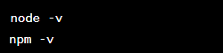
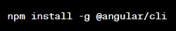
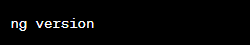

━━━━━━━━━━━━━━━━━━━━━━━━━━━━━━━━
[1] Introdução
[2] Versões
[3] Instalação
[4] Criando Projetos
[5] Executando Projetos
━━━━━━━━━━━━━━━━━━━━━━━━━━━━━━━━
Angular
Angular é um framework de desenvolvimento de aplicativos web. Ele permite a criação de aplicativos web dinâmicos e
interativos com uma estrutura robusta e organizada. O Angular utiliza a linguagem TypeScript na codificação, proporcionando
tipagem estática e recursos avançados de orientação a objetos.
Angular permite que você construa interfaces de usuário utilizando HTML como base. O HTML é usado para definir a estrutura
do conteúdo da página, enquanto o Angular é utilizado para adicionar lógica dinâmica e interatividade a essa estrutura.
Instalação
1) Pré-requisitos
Verifique se você já possui o Node.js e o npm(Node Package Manager) instalados em seu sistema. Você pode verificar isso digitando esses comandos no terminal:

Se esses comandos exibirem as versões do Node.js e do npm, tudo certo pra prosseguir.
2) Instalação
Execute o seguinte comando no terminal:

Aguarde até que a instalação seja concluída. Após a instalação, você pode verificar se o Angular CLI foi instalado executando
o seguinte comando:

Isso exibirá a versão do Angular CLI instalada, junto com outras informações adicionais.